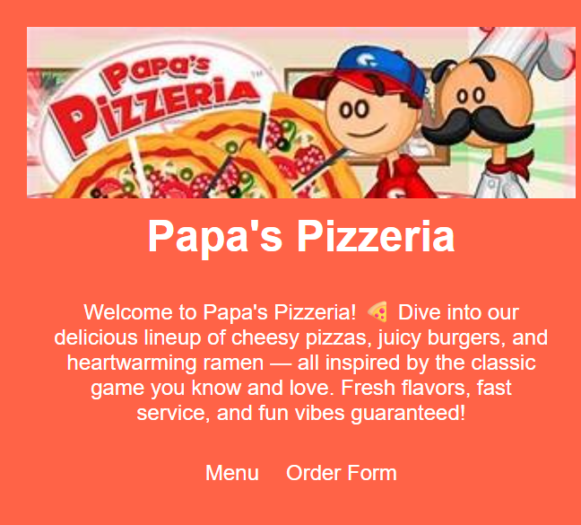

About Me

Hi, I'm Shaun Mathew, a second-year engineering student at
St. Francis Institute of Technology.
I have a strong passion for coding and gaming, constantly exploring new technologies and building
creative projects to sharpen my skills. I enjoy solving complex problems and often work on
web development
and software-based innovations.
Outside academics, I'm a dedicated gamer and tech enthusiast who
loves diving into immersive game worlds.
Fitness is also a big part of my lifestyle — I regularly hit
the gym to stay active and balanced.
My technical toolkit includes Python, JavaScript, React, Django,
and SQLite3.
I'm currently working toward a career in software engineering, with an interest in AI-powered
solutions
and human-computer interaction.
I'm also part of our college's tech community, where I've led workshops
and mentored peers.
I believe in continuous learning, whether it's through late-night coding sessions or
intense gym workouts.
I'm always eager to collaborate, learn, and push my boundaries — both mentally and physically.
My Projects
-
Faculty Timetable Planner
The Faculty Timetable Generator is a robust Django-based web application designed to streamline and efficiently manage weekly schedules for educational institutions. It provides comprehensive features such as secure user authentication to ensure data privacy and role-based access. The system supports customizable timetable creation for standard 5-day workweeks (9 AM to 5 PM), allowing faculties to tailor schedules according to departmental needs. Users can easily add, edit, or delete entries with an intuitive interface, and generate professional PDF exports for printing or distribution. By automating the complex scheduling process, this tool saves time and reduces conflicts, enhancing overall administrative productivity in academic environments.

-
Currency Converter
A simple and responsive currency converter website built with Django. It allows users to convert between different currencies using real-time exchange rates sourced from reliable APIs. The application features a clean and intuitive user interface designed for quick and easy conversions on both desktop and mobile devices. Additional features include currency rate history, customizable favorite currencies, and seamless integration with modern web standards to ensure fast load times and accessibility for all users. This tool is ideal for travelers, businesses, and anyone needing up-to-date currency information at their fingertips.
-
Virtual Mouse
The Virtual Mouse Project leverages advanced computer vision techniques to control the mouse cursor through intuitive hand gestures, effectively eliminating the need for a physical mouse. Developed using Python, OpenCV, and Mediapipe, the system processes real-time video input from a webcam to accurately recognize and interpret various hand gestures. This allows users to perform common mouse actions such as clicking, dragging, and scrolling with natural movements. Designed to enhance accessibility and provide a futuristic human-computer interaction experience, the project demonstrates practical applications of machine learning and gesture recognition technologies in everyday computing.
-
Weather App
A simple and responsive weather application built using HTML, CSS, and JavaScript. It utilizes the OpenWeatherMap API to fetch real-time weather data based on city names entered by the user, providing accurate and up-to-date information. The app also integrates geolocation functionality via the Geocoding API to automatically detect the user’s location and display relevant weather conditions. Featuring visually appealing weather icons and clear descriptions, the interface ensures an engaging and user-friendly experience. The application includes robust error handling to gracefully manage empty or invalid inputs, making it reliable and easy to use for anyone seeking quick weather updates.
-
Restaurant Menu
Papa's Pizzeria Menu is a charming static HTML project inspired by the classic game. It showcases a playful and themed layout that captures the spirit of a pizzeria, complete with inline-styled images of delicious menu items and clear, appetizing descriptions. The project includes a simple yet functional order form, allowing users to select their favorite pizzas easily. Built entirely using HTML without relying on CSS or JavaScript, this project demonstrates how thoughtful structure and content can create an engaging user experience even with minimal technology.

Contact
Githubshaunmat13@gmail.com
+91-9820717161